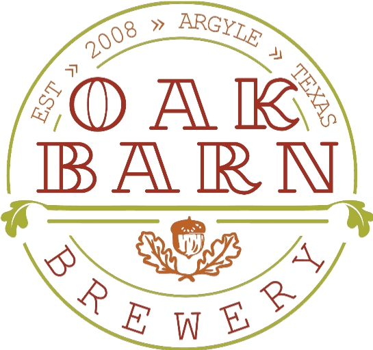
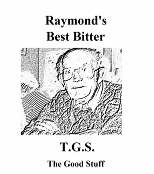
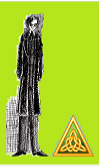
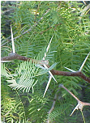
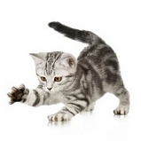
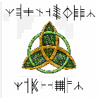
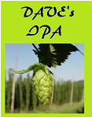
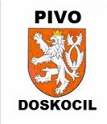
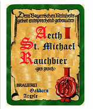
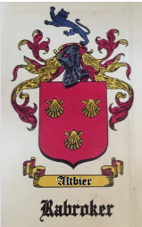

Just like our brews, still fermenting!
OakBarn Brewery makes some of the best beer in the world. We have converted many light beer drinkers from the dark side to real beer.
Back in the 1970s, in the UK, CAMRA (the Campaign for Real Ale) had just been formed, and that is where the taste for real beer began.
In 2008 our buddy Mike suggested we brew our own beer. We were a little sceptical but went along. We visited our local home brew store, Homebrew Headquarters in Richardson, Texas, and decided to make a Best Bitter clone.
We brewed from an extract kit outside the barn on a cold day. We chilled the wort (the sweet liquid that becomes beer) by dunking the whole brew kettle in a cowboy bathtub full of ice water. We moved the wort to a 6 gallon carboy and added some dry yeast along with the kit yeast.
We decided to keg from the start. We had our first taste about a month after that first brew day.
OMG!
We are all-grain, semi-automated brewers who brew a barrel at a time. We have four vessels and a permanent brew stand (brew sculpture) with a hard-piped manifold and four center-inlet pumps. We normally do not move hoses when we brew: we just turn valves and use the right pump.
Our fermentation room can be held anywhere from the 50s to 70°F, and sometimes a freezer does duty as a fermentation chamber.
We brew the same beers over and over, with a small batch of something new once in a while. We generally follow the Reinheitsgebot (the old German beer purity law).
That brewery is where Skynet Brewer was born: the control panel we built to run our own brew days.
Labels drawn by OakBarn Brewery.








